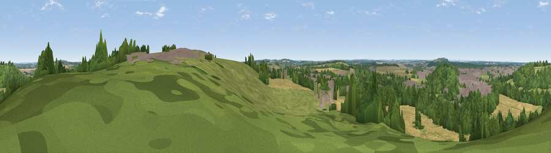

Viewpoint near Wellow
#34689 in England · top 47% of its area beats it · near Wellow · open accessWhere it is
The exact computed spot (SK 67325 66675). Click the marker for map links.
Public access: this spot lies on mapped open-access land (CRoW Act 2000) — you may roam here on foot. Computed from Natural England's CRoW access layer and OpenStreetMap rights of way — not the legal definitive map. Always verify locally.
The view, rendered

A 360° render of this exact spot computed from the terrain model, tree cover and land cover — summer colours, afternoon light, calibrated against photographs of famous viewpoints. Real trees, hedges and buildings will differ in detail.
The panorama
Grey silhouette: terrain skyline in each direction (720 bearings, Earth curvature and refraction included). Dashed green: skyline with trees (+15 m) and buildings (+8 m) as obstacles. Blue strip: how far the ground is visible on each bearing.
Where the view opens
Wedge length = distance to the farthest visible ground on that bearing (vegetation-aware). Rings at 10, 25 and 50 km.
What fills the view
36% woodland · 30% grassland · 23% cropland · 11% built-up
Angular shares of the visible panorama (visual magnitude), not map area. Landscape diversity 0.58 (0–1 Shannon).
Key numbers
More beautiful places nearby
The staircase of upgrades: each row has a higher view potential than everything closer. Driving times are estimates from straight-line distance, calibrated against real road routing — check an actual route before setting out.
| Place | Direction | Drive | Score |
|---|---|---|---|
| Viewpoint near Eakring | S · 4 km | ~9 min | 35.6 |
| Burstheart Hill [Thoresby Colliery] | WNW · 4 km | ~10 min | 69.3 |
| Viewpoint near Maltby | NNW · 29 km | ~45 min | 70.7 |
| Crich Stand | WSW · 35 km | ~53 min | 73.0 |
| Alport Height | WSW · 40 km | ~59 min | 73.9 |
| Viewpoint near Wharncliffe Side | NW · 46 km | ~67 min | 75.2 |
| Tissington Hill | WSW · 54 km | ~76 min | 75.5 |
| Viewpoint near Woodhouse Eaves | SSW · 54 km | ~76 min | 77.7 |
53.19291, -0.99378 · source: screening · position refined by local search. Computed location — check access rights before visiting.